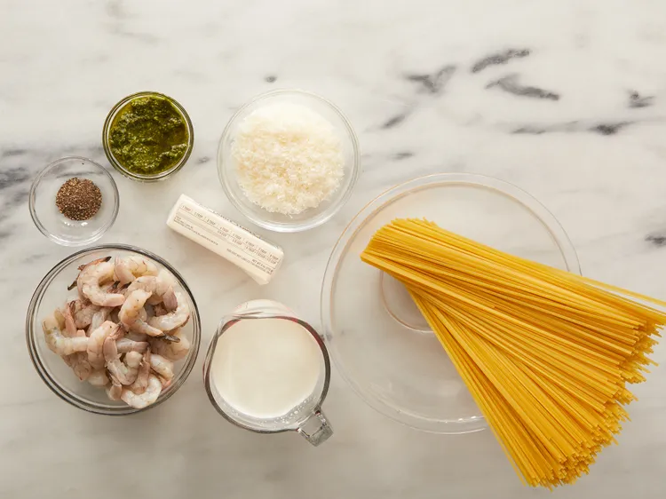
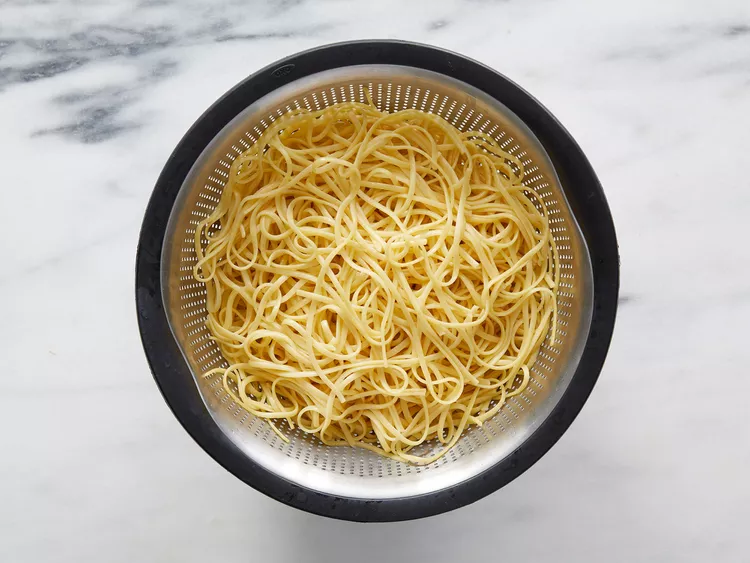
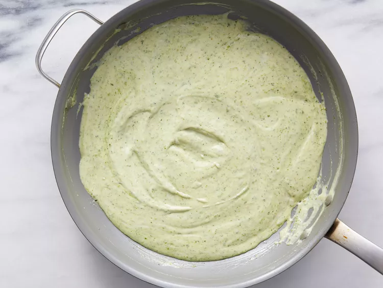

Gambas Cremosas al Pesto

Descripción
Esta pasta cremosa con pesto y gambas es perfecta para las cenas entre semana y es una de las favoritas de nuestra familia.
Ingredientes
- 1 libra de pasta linguini
- 2 tazas de crema espesa
- 1/2 cucharadita de pimienta negra molida
- 1 taza de queso parmesano rallado
- 1/3 taza de pesto
- 1 libra de camarones grandes, pelados y desvenados.
Instrucciones
-
Reúna los ingredientes.]

-
Llena una olla grande con agua ligeramente salada y ponla a hervir. Agrega los linguini y deja que vuelva a hervir. Cocina la pasta sin tapar, revolviendo ocasionalmente, hasta que esté tierna pero firme al dente, aproximadamente de 8 a 10 minutos; escúrrela.

- Mientras tanto, derrita la mantequilla en una sartén grande a fuego medio. Incorpore la crema y sazone con pimienta; cocine, revolviendo constantemente, durante 6 a 8 minutos.
-
Incorpora el queso parmesano a la salsa de crema y mezcla bien. Agrega el pesto y cocina hasta que espese, de 3 a 5 minutos.

-
Agregue los camarones y cocine hasta que se pongan rosados, aproximadamente 5 minutos. Sirva la salsa sobre los linguini calientes.

-
¡Sírvelo caliente y disfrútalo!